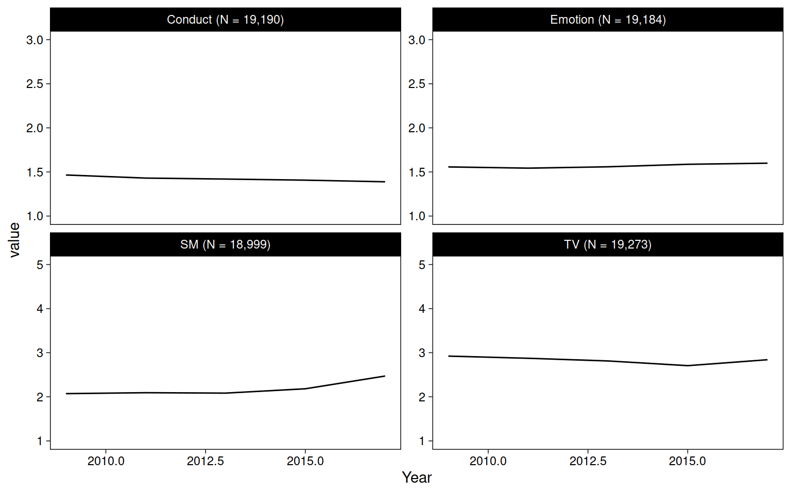

Chapter 5 Data descriptives
5.1 Data
mtf <- read_rds("data/mtf.rds")
us <- read_rds("data/us.rds")
yrbs <- read_rds("data/yrbs.rds")5.1.1 Sample sizes and years
Sample sizes per dataset are the number of rows that include the outcome variable (there are two for US). The total sample size in the entire manuscript is the sum without US-emotion (including both US outcomes would duplicate its N).
tibble(
mtf = drop_na(mtf, Depression) %>% nrow,
us_conduct = drop_na(us, Conduct) %>% nrow,
us_emotion = drop_na(us, Emotion) %>% nrow,
yrbs = drop_na(yrbs, Suicide) %>% nrow
) %>%
mutate(total = mtf + us_conduct + yrbs) %>%
mutate(across(.fns = ~comma(.))) %>%
kable()| mtf | us_conduct | us_emotion | yrbs | total |
|---|---|---|---|---|
| 380,924 | 19,190 | 19,184 | 30,447 | 430,561 |
Actual sample sizes used in analyses are the intersections of non-missing values for the two variables (outcome, technology) used in each model.
doit <- function(data, name, x, y) {
data <- data %>%
drop_na(all_of(x), all_of(y))
data %>%
count(Sex) %>%
pivot_wider(names_from = Sex, values_from = n) %>%
mutate(Total = Female + Male) %>%
mutate(
across(
c(Female, Male),
~str_glue("{comma(.)} ({percent(./Total)})")
)
) %>%
mutate(across(where(is.numeric), ~comma(.))) %>%
mutate(Years = paste(range(data$Year), collapse = " - ")) %>%
mutate(Dataset = name, Technology = x, Outcome = y) %>%
select(Dataset, Technology, Outcome, Years, Total, Female, Male)
}
bind_rows(
doit(mtf, "MTF", "TV", "Depression"),
doit(mtf, "MTF", "SM", "Depression"),
doit(us, "US", "TV", "Emotion"),
doit(us, "US", "SM", "Emotion"),
doit(us, "US", "TV", "Conduct"),
doit(us, "US", "SM", "Conduct"),
doit(yrbs, "YRBS", "TV", "Suicide"),
doit(yrbs, "YRBS", "DV", "Suicide")
) %>%
arrange(Dataset, Technology, Outcome) %>%
kable()| Dataset | Technology | Outcome | Years | Total | Female | Male |
|---|---|---|---|---|---|---|
| MTF | SM | Depression | 2009 - 2017 | 120,265 | 61,792 (51%) | 58,473 (49%) |
| MTF | TV | Depression | 1991 - 2017 | 367,444 | 191,859 (52%) | 175,585 (48%) |
| US | SM | Conduct | 2009 - 2017 | 18,815 | 9,434 (50%) | 9,381 (50%) |
| US | SM | Emotion | 2009 - 2017 | 18,811 | 9,432 (50%) | 9,379 (50%) |
| US | TV | Conduct | 2009 - 2017 | 19,079 | 9,554 (50%) | 9,525 (50%) |
| US | TV | Emotion | 2009 - 2017 | 19,074 | 9,552 (50%) | 9,522 (50%) |
| YRBS | DV | Suicide | 2007 - 2017 | 29,450 | 15,424 (52%) | 14,026 (48%) |
| YRBS | TV | Suicide | 2007 - 2017 | 29,433 | 15,422 (52%) | 14,011 (48%) |
5.1.2 Missingness
mtf_db_na <- rowSums(is.na(select(mtf, starts_with("D_B_"))))
kable(prop.table(table(mtf_db_na)), digits = 3)| mtf_db_na | Freq |
|---|---|
| 0 | 0.949 |
| 1 | 0.027 |
| 2 | 0.006 |
| 3 | 0.005 |
| 4 | 0.007 |
| 5 | 0.007 |
us_sdq_na <- rowSums(is.na(select(us, starts_with("sdq"))))
kable(prop.table(table(us_sdq_na)), digits = 3)| us_sdq_na | Freq |
|---|---|
| 0 | 0.958 |
| 1 | 0.025 |
| 2 | 0.004 |
| 3 | 0.001 |
| 4 | 0.001 |
| 5 | 0.000 |
| 6 | 0.001 |
| 7 | 0.000 |
| 8 | 0.000 |
| 9 | 0.000 |
| 10 | 0.010 |
5.1.3 Outcomes
mtf %>%
select(starts_with("D_B_")) %>%
psych::alpha() %>%
summary##
## Reliability analysis
## raw_alpha std.alpha G6(smc) average_r S/N ase mean sd median_r
## 0.85 0.85 0.84 0.48 5.5 0.00039 2 0.95 0.44cor(
select(mtf, starts_with("D_B_")),
use = "pairwise.complete.obs"
) %>%
round(2)## D_B_1 D_B_2 D_B_3 D_B_4 D_B_5 D_B_6
## D_B_1 1.00 0.60 0.48 0.34 0.56 0.34
## D_B_2 0.60 1.00 0.57 0.43 0.63 0.45
## D_B_3 0.48 0.57 1.00 0.39 0.59 0.39
## D_B_4 0.34 0.43 0.39 1.00 0.38 0.64
## D_B_5 0.56 0.63 0.59 0.38 1.00 0.40
## D_B_6 0.34 0.45 0.39 0.64 0.40 1.00sdq_con <- c("sdqe", "sdqg", "sdql", "sdqr", "sdqv")
sdq_emo <- c("sdqc", "sdqh", "sdqm", "sdqp", "sdqx")
us %>%
select(all_of(sdq_con)) %>%
psych::alpha() %>%
summary##
## Reliability analysis
## raw_alpha std.alpha G6(smc) average_r S/N ase mean sd median_r
## 0.62 0.62 0.58 0.25 1.6 0.0041 1.4 0.36 0.24us %>%
select(all_of(sdq_emo)) %>%
psych::alpha() %>%
summary##
## Reliability analysis
## raw_alpha std.alpha G6(smc) average_r S/N ase mean sd median_r
## 0.69 0.69 0.65 0.31 2.2 0.0035 1.6 0.45 0.29cor(
select(us, all_of(sdq_con)),
use = "pairwise.complete.obs"
) %>%
round(2)## sdqe sdqg sdql sdqr sdqv
## sdqe 1.00 0.30 0.34 0.34 0.16
## sdqg 0.30 1.00 0.23 0.24 0.15
## sdql 0.34 0.23 1.00 0.28 0.21
## sdqr 0.34 0.24 0.28 1.00 0.23
## sdqv 0.16 0.15 0.21 0.23 1.00cor(
select(us, all_of(sdq_emo)),
use = "pairwise.complete.obs"
) %>%
round(2)## sdqc sdqh sdqm sdqp sdqx
## sdqc 1.00 0.26 0.28 0.19 0.21
## sdqh 0.26 1.00 0.42 0.39 0.39
## sdqm 0.28 0.42 1.00 0.29 0.30
## sdqp 0.19 0.39 0.29 1.00 0.37
## sdqx 0.21 0.39 0.30 0.37 1.005.2 Figures
mtf %>%
pivot_longer(c(TV, SM, Depression)) %>%
drop_na(value) %>%
add_count(name) %>%
mutate(name = str_glue("{name} (N = {comma(n)})")) %>%
ggplot(aes(Year, value)) +
geom_blank() +
stat_summary(fun=mean, geom="line") +
facet_wrap("name", scales = "free_y")
us %>%
pivot_longer(c(SM, TV, Emotion, Conduct)) %>%
drop_na(value) %>%
add_count(name) %>%
mutate(name = str_glue("{name} (N = {comma(n, accuracy = 1)})")) %>%
ggplot(aes(Year, value)) +
geom_blank() +
stat_summary(fun=mean, geom="line") +
facet_wrap("name", scales = "free_y")
yrbs %>%
pivot_longer(c(TV, DV, sad_lonely:suicide_3)) %>%
drop_na(value) %>%
add_count(name) %>%
mutate(name = str_glue("{name} (N = {comma(n)})")) %>%
ggplot(aes(Year, value)) +
geom_blank() +
stat_summary(fun=mean, geom="line") +
facet_wrap("name", scales = "free_y")
options(width = 120)
library(sessioninfo)
session_info()## ─ Session info ───────────────────────────────────────────────────────────────────────────────────────────────────────
## setting value
## version R version 4.0.3 (2020-10-10)
## os macOS Big Sur 10.16
## system x86_64, darwin17.0
## ui X11
## language (EN)
## collate en_GB.UTF-8
## ctype en_GB.UTF-8
## tz Europe/London
## date 2021-03-01
##
## ─ Packages ───────────────────────────────────────────────────────────────────────────────────────────────────────────
## package * version date lib source
## assertthat 0.2.1 2019-03-21 [1] CRAN (R 4.0.0)
## backports 1.2.1 2020-12-09 [1] CRAN (R 4.0.2)
## bookdown 0.21.6 2021-03-01 [1] Github (rstudio/bookdown@ca0145f)
## broom * 0.7.5.9000 2021-03-01 [1] Github (tidymodels/broom@0b3528b)
## bslib 0.2.4 2021-01-25 [1] CRAN (R 4.0.3)
## cellranger 1.1.0 2016-07-27 [1] CRAN (R 4.0.0)
## cli 2.3.1 2021-02-23 [1] CRAN (R 4.0.3)
## colorspace 2.0-0 2020-11-11 [1] CRAN (R 4.0.2)
## crayon 1.4.1 2021-02-08 [1] CRAN (R 4.0.3)
## DBI 1.1.1 2021-01-15 [1] CRAN (R 4.0.2)
## dbplyr 2.1.0 2021-02-03 [1] CRAN (R 4.0.2)
## digest 0.6.27 2020-10-24 [1] CRAN (R 4.0.2)
## dplyr * 1.0.4 2021-02-02 [1] CRAN (R 4.0.2)
## ellipsis 0.3.1 2020-05-15 [1] CRAN (R 4.0.0)
## evaluate 0.14 2019-05-28 [1] CRAN (R 4.0.0)
## fansi 0.4.2 2021-01-15 [1] CRAN (R 4.0.2)
## forcats * 0.5.1 2021-01-27 [1] CRAN (R 4.0.2)
## fs 1.5.0 2020-07-31 [1] CRAN (R 4.0.2)
## generics 0.1.0 2020-10-31 [1] CRAN (R 4.0.2)
## ggplot2 * 3.3.3 2020-12-30 [1] CRAN (R 4.0.2)
## ggstance * 0.3.5 2020-12-17 [1] CRAN (R 4.0.2)
## glue 1.4.2 2020-08-27 [1] CRAN (R 4.0.2)
## gtable 0.3.0 2019-03-25 [1] CRAN (R 4.0.0)
## haven 2.3.1 2020-06-01 [1] CRAN (R 4.0.0)
## highr 0.8 2019-03-20 [1] CRAN (R 4.0.0)
## hms 1.0.0 2021-01-13 [1] CRAN (R 4.0.2)
## htmltools 0.5.1.1 2021-01-22 [1] CRAN (R 4.0.2)
## httr 1.4.2 2020-07-20 [1] CRAN (R 4.0.2)
## jquerylib 0.1.3 2020-12-17 [1] CRAN (R 4.0.2)
## jsonlite 1.7.2 2020-12-09 [1] CRAN (R 4.0.2)
## knitr * 1.31 2021-01-27 [1] CRAN (R 4.0.2)
## lattice 0.20-41 2020-04-02 [1] CRAN (R 4.0.3)
## lifecycle 1.0.0 2021-02-15 [1] CRAN (R 4.0.2)
## lubridate 1.7.9.2 2020-11-13 [1] CRAN (R 4.0.2)
## magrittr 2.0.1 2020-11-17 [1] CRAN (R 4.0.2)
## mnormt 2.0.2 2020-09-01 [1] CRAN (R 4.0.2)
## modelr 0.1.8 2020-05-19 [1] CRAN (R 4.0.0)
## munsell 0.5.0 2018-06-12 [1] CRAN (R 4.0.0)
## nlme 3.1-152 2021-02-04 [1] CRAN (R 4.0.2)
## pacman 0.5.1 2019-03-11 [1] CRAN (R 4.0.0)
## pillar 1.5.0 2021-02-22 [1] CRAN (R 4.0.3)
## pkgconfig 2.0.3 2019-09-22 [1] CRAN (R 4.0.0)
## psych 2.0.12 2020-12-16 [1] CRAN (R 4.0.2)
## purrr * 0.3.4 2020-04-17 [1] CRAN (R 4.0.0)
## R6 2.5.0 2020-10-28 [1] CRAN (R 4.0.2)
## Rcpp 1.0.6 2021-01-15 [1] CRAN (R 4.0.2)
## readr * 1.4.0 2020-10-05 [1] CRAN (R 4.0.2)
## readxl 1.3.1 2019-03-13 [1] CRAN (R 4.0.0)
## reprex 1.0.0 2021-01-27 [1] CRAN (R 4.0.2)
## rlang 0.4.10 2020-12-30 [1] CRAN (R 4.0.2)
## rmarkdown 2.7.2 2021-03-01 [1] Github (rstudio/rmarkdown@9bfaf4a)
## rstudioapi 0.13 2020-11-12 [1] CRAN (R 4.0.2)
## rvest 0.3.6 2020-07-25 [1] CRAN (R 4.0.2)
## sass 0.3.1 2021-01-24 [1] CRAN (R 4.0.2)
## scales * 1.1.1 2020-05-11 [1] CRAN (R 4.0.0)
## sessioninfo * 1.1.1 2018-11-05 [1] CRAN (R 4.0.0)
## stringi 1.5.3 2020-09-09 [1] CRAN (R 4.0.2)
## stringr * 1.4.0 2019-02-10 [1] CRAN (R 4.0.0)
## tibble * 3.1.0 2021-02-25 [1] CRAN (R 4.0.2)
## tidyr * 1.1.2 2020-08-27 [1] CRAN (R 4.0.2)
## tidyselect 1.1.0 2020-05-11 [1] CRAN (R 4.0.0)
## tidyverse * 1.3.0 2019-11-21 [1] CRAN (R 4.0.0)
## tmvnsim 1.0-2 2016-12-15 [1] CRAN (R 4.0.0)
## utf8 1.1.4 2018-05-24 [1] CRAN (R 4.0.0)
## vctrs 0.3.6 2020-12-17 [1] CRAN (R 4.0.2)
## withr 2.4.1 2021-01-26 [1] CRAN (R 4.0.2)
## xfun 0.21 2021-02-10 [1] CRAN (R 4.0.2)
## xml2 1.3.2 2020-04-23 [1] CRAN (R 4.0.0)
## yaml 2.2.1 2020-02-01 [1] CRAN (R 4.0.0)
##
## [1] /Library/Frameworks/R.framework/Versions/4.0/Resources/library